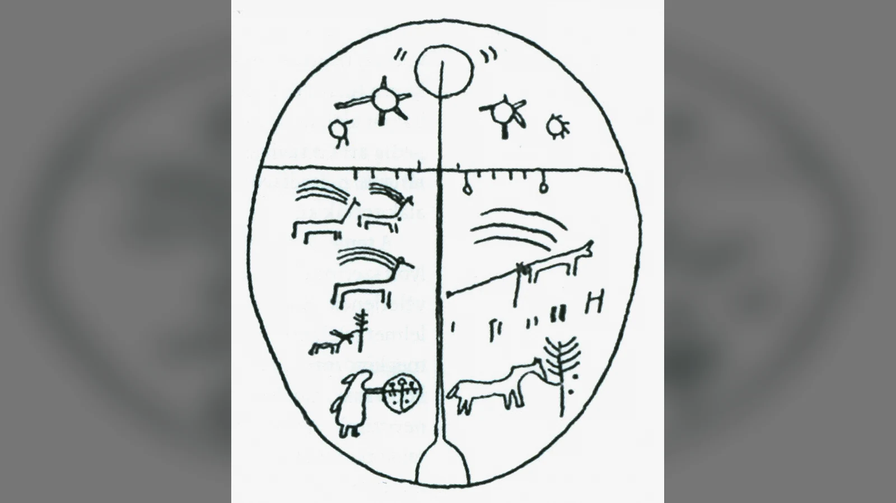
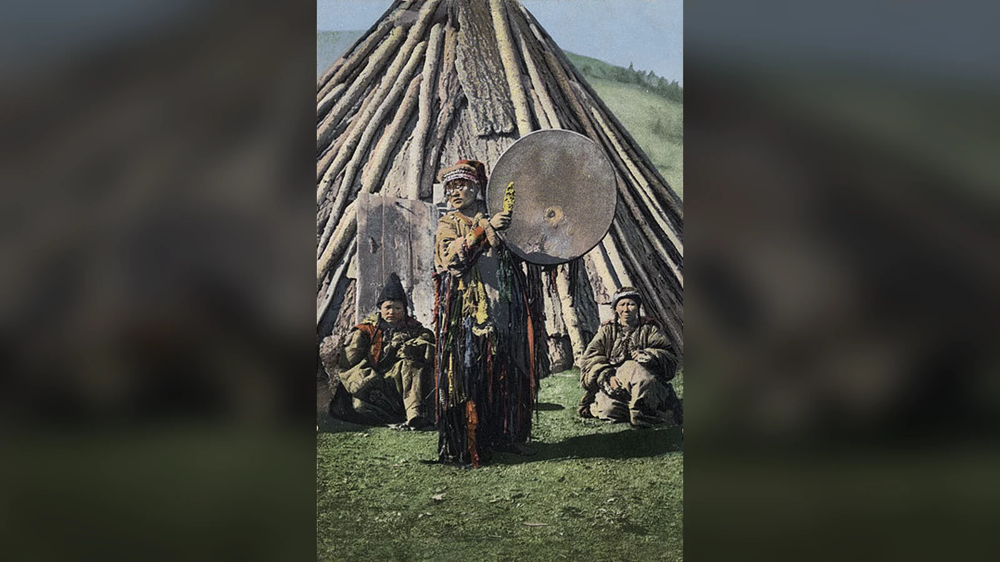

Altay yaratılış anlatılarından birinde, başlangıçta geniş bir su kütlesi vardır. Yeryüzünü meydana getirmek için suyun dibinden toprak çıkarılması gerekir. Yaratıcı güçle birlikte hareket eden ikinci varlık, getirdiği toprağın bir kısmını ağzında saklar. Toprak büyümeye başladığında saklanan parça da genişler; düzenin kuruluşuna eşlik eden bu davranış, çatışmanın başlangıcına dönüşür. Bu sahne, 19. yüzyılda derlenen Altay anlatılarının belirli bir kolunda Erlik adıyla ilişkilendirilen varlığın neden basit bir canavar olarak anlatılamayacağını gösterir. O, dünyanın ortaya çıkışına karışır; ardından kurulan düzenin sınırlarına itilir.
Erlik Han kimdir sorusunun tarihsel olarak en sağlam cevabı, özellikle Altay ve Güney Sibirya çevresinde kaydedilmiş sözlü geleneklerde aranmalıdır. Erlik; yeraltı ülkesi, ölüler, hastalıklar, tehlikeli ruhlar ve insanların uzak tutmaya çalıştığı güçlerle bağlantılı kudretli bir varlıktır. Bazı anlatılarda yaratıcıyla karşı karşıya gelir, bazılarında onun buyruğuna bağlıdır; ritüel kayıtlarında ise kendisinden sakınılan ve kimi zaman sunularla yatıştırılan bir muhatap olarak belirir. Bu özellikleri ona yeraltı hükümdarı demeyi mümkün kılar. Fakat her anlatıda ölümü yaratan bir ölüm tanrısı veya ölüleri ahlaki suçlarına göre yargılayan bir hâkim olduğunu söylemek başka, çok daha güçlü bir iddiadır.
Günümüzde sıkça kullanılan “Türk mitolojisinin şeytanı” sözü de bu yüzden açıklama gerektirir. Erlik'in yıkıcı ve korkulan yönü inkâr edilemez; buna karşılık onu İslamiyet'teki Şeytan'ın ya da Hristiyanlıkta Lucifer'in bütün özellikleriyle eşleştirmek, farklı inanç dünyalarını tek bir kalıba sokar. Üstelik Erlik hakkında ayrıntılı bilgiler veren kayıtlar bütün Türk topluluklarından aynı çağda gelmez. Bir Altay kamının töreninde anlatılan Erlik ile sekizinci yüzyıl Göktürk hükümdarlarının yazıtlarında görülen kutsal dünya arasında doğrudan ve eksiksiz bir eşitlik kurulamaz. Erlik'i ilginç kılan da budur: onun çevresinde, yaratılışın nasıl tamamlandığı kadar insanların ölüm ve felaket karşısında nasıl davrandığı da anlatılır.
Erlik Han Kimdir? Yeraltı Hükümdarının Mitolojideki Yeri
Erlik'in en belirgin özelliği, yukarıdaki göksel güçlerle aşağıdaki dünya arasında kurulan ayrımın alt tarafında yer almasıdır. Altay çevresinde derlenen bazı tasavvurlarda gök, insanların yaşadığı yeryüzü ve aşağıdaki ülke farklı varlıkların yetki alanlarıdır. Bu düzeni modern bir devletin üç katlı idaresi gibi düşünmek doğru olmaz. Sözlü anlatılar, tören sözleri ve kam yolculukları bu alanları farklı ayrıntılarla betimler. Erlik'in ülkesine giden yolun tehlikeli olması, onun buyruğundaki ruhların insanlara zarar verebilmesi ve bazı hastalıkların bu dünyayla ilişkilendirilmesi, figürün gündelik kaygılarla bağını kurar.
“Han” unvanı, Erlik'in bağımsız ve sınırsız bir yaratıcı olduğu anlamına gelmez. Türkçe ve komşu dillerde hükümdarlığı çağrıştıran bu unvan, onun kendi alanındaki otoritesini anlatır. Kimi derlemelerde yeraltında yardımcıları, kapıları ve kendisine ait bir yerleşim bulunur. Bununla birlikte yaratılış hikâyelerinin önemli bir kısmında Erlik, üstteki yaratıcı kudretin koyduğu sınırları aşamaz. Çatışma tam da bu yetki geriliminden doğar: Erlik güçlüdür, fakat gücünün sınırları vardır. Bu yapı, iki eşit tanrının evreni sonsuza kadar paylaştığı basit bir şema değildir.
Altay anlatılarında Erlik'in karşısında çoğunlukla Ülgen adı görülür. Ancak Ülgen'in her sürümde aynı görevle belirmediğini, yaratıcıya Kuday gibi başka adların verilebildiğini bilmek gerekir. Modern çizimlerde karşılıklı yerleştirilen “iyilik tanrısı Ülgen” ve “kötülük tanrısı Erlik” figürleri, belirli bir anlatı grubunun kullanışlı fakat eksik özetidir. Kaynaklar, bu ilişkinin kimi zaman kardeşlik, kimi zaman yaratıcı ile yaratılan arasındaki bağımlılık, kimi zaman da birbirine rakip kozmik güçler şeklinde kurulduğunu gösterir. Bu değişkenlik, Erlik'in belirsiz bir karakter olmasından çok sözlü geleneğin farklı topluluklarda farklı sorunlara cevap vermesinden kaynaklanır.
Bir tanrısal varlığı anlamak için ona hangi sıfatların verildiği kadar insanların onunla ne yaptığına bakmak gerekir. Erlik'e ilişkin etnografik kayıtlar, insanların ondan gelecek hastalık ve kayıplardan korktuğunu, kimi durumlarda kam aracılığıyla onunla ilişki kurduğunu ve zararını azaltmaya çalıştığını anlatır. Korkulan bir güce kurban sunmak, onu ahlaki örnek olarak benimsemekle aynı davranış değildir. Bu ayrım gözden kaçırıldığında, Erlik ya bütünüyle sevilen bir tanrıya ya da her zaman yalnızca düşman kabul edilen bir şeytana dönüştürülür. İki yorum da ritüellerin karmaşık mantığını daraltır.
Yaratılış Anlatılarında Erlik: Suyun Dibindeki Toprak
Erlik'in mitolojik kişiliğini en iyi gösteren sahnelerden biri, araştırmalarda “toprak dalgıcı” adıyla anılan yaratılış motifidir. Başlangıçta su vardır; yeryüzünü kurmak için aşağıdan bir parça toprak getirilir. Bu motif yalnız Altay çevresine özgü değildir; Kuzey Avrasya'nın farklı anlatı geleneklerinde de karşımıza çıkar. Altay sürümlerini önemli kılan, toprağı çıkarma işinin yaratıcı ile Erlik arasındaki güç ilişkisine bağlanmasıdır. Erlik, oluşmakta olan dünyaya katkıda bulunurken kendi payını saklamaya çalışır. Bu davranışın sonucu, yaratıcı buyruğa karşı çıkmanın bedeli olarak anlatılır.
Wilhelm Radloff'un 19. yüzyılda yayımladığı derleme geleneğinde aktarılan yaratılış öyküsü ile Vasili Verbitski'nin kaydettiği anlatı aynı metnin iki kelimesi kelimesine kopyası değildir. Yaratıcı figürün adı, olayların sırası ve Erlik'in başlangıçtaki konumu farklılaşabilir. Bazı aktarım zincirlerinde yaratıcı Kuday olarak anılırken Ülgen adı da kullanılır; bazı varyantlarda ise Erlik'in yaratıcıyla karşılaşması daha başka bir çerçeveye yerleştirilir. Dolayısıyla “Erlik, Ülgen'in emriyle suya daldı ve toprağı sakladı” cümlesi belirli bir sürümün özeti olabilir, fakat bütün Altay yaratılış metinlerinin değişmez ilk satırı değildir.
Toprağı ağzında saklama ayrıntısı, olayın anlamını belirler. Erlik yaratılış sürecinin dışında duran, yalnızca sonradan gelip düzeni bozan bir düşman değildir. Dünyanın kurulması sırasında bir eylemde bulunur; sorun, bu eylemin ardından payı kendisine ayırma girişimidir. Ağzındaki toprağın büyümesi, saklanan şeyin sahibine zarar vermesiyle sonuçlanır. Anlatı böylece hırsın sonuçlarını gösteren bir olay örgüsü kurar. Bunu doğrudan modern ahlak dersi diye okumak gerekmese de paylaşılmayan yaratıcı gücün neden sınırlandırıldığını açıklayan güçlü bir motif olduğu açıktır.
Toprak dalgıcı anlatılarının çevresinde başka olaylar da yer alır. Bazı metinlerde yaratıcı insan bedenlerini yapar, onların başına bir köpek bekçi bırakır; Erlik ya da onunla ilişkilendirilen karşı güç, korumasız bedene müdahale eder. Bu müdahale, insanın neden hastalandığını, neden kirlenmeye ve ölüme açık olduğunu açıklamak için kullanılır. Bazı sürümlerde bedene soluk verme veya onu bozma meselesi öne çıkar. Bunları “Erlik insanı yarattı” biçiminde tek cümleye indirmek, anlatıların ayırdığı bedenin yapılması, can verilmesi ve ölümün ortaya çıkması aşamalarını birbirine karıştırır.
N. R. Oinotkinova'nın Altay yaratılış öykülerini karşılaştıran araştırması, iki geniş anlatı çizgisini ayırt eder: Ülgen ile Erlik'in karşıtlığı etrafında kurulan anlatılar ve Budist etkilerle biçimlenmiş başka bir çizgi. İkinci grupta Üç Kurbustan gibi figürlerin katıldığı bir yarışma ve dünya üzerinde hüküm sürme konusu bulunur. Bu ayrım önemlidir, çünkü bugün tek bir çizgiye indirgenen “Erlik'in yaratılış hikâyesi” farklı dinî temasların ve yerel aktarımın izlerini taşıyabilir. Bir anlatının Budist unsurlar barındırması, içindeki her motifin bütünüyle dışarıdan alındığını kanıtlamaz; ancak bu unsurları görmezden gelerek metni saf ve değişmemiş bir ilkçağ kalıntısı ilan etmek de mümkün değildir.
Yaratılışın bu biçimde anlatılması, insanın yaşadığı dünyayı neden kusursuz bulmadığıyla ilgilidir. Dağlar, toprak, beden, hastalık ve ölüm, farklı öykülerde yaratıcı ile karşıt gücün müdahaleleriyle açıklanır. Burada iki varlığın kavgası, evrenin kurulmasını tamamen engellemez; tersine, bugün bilinen eksik ve tehlikeli dünyanın nasıl ortaya çıktığını anlaşılır kılar. Erlik'in bazı anlatılarda yaratılışın başında bulunmasıyla sonradan yeraltında hüküm sürmesi arasındaki bağ da böyle kurulmuştur. Ancak bu bağlantının her sürümde aynı olay dizisini izlediği söylenemez.
Erlik Neden Yeraltına Gönderildi?
Erlik'in yeraltına inişi çoğu popüler anlatıda tek bir sahneye dönüştürülür: iyi bir varlık kibirlenir, yaratıcıya başkaldırır ve ceza olarak aşağı atılır. Oysa derlenen öykülerde aşağı gönderilme nedenleri farklı biçimlerde işlenir. Toprağı saklamak, yaratıcıyla eşit olmak istemek, insan üzerinde hak iddia etmek veya verilen emre uymamak bu çerçevelerden bazılarıdır. Bunların ortak tarafı, Erlik'in yetkisinin sınırlanmasıdır. Ayrıntılar ise hangi anlatının ve hangi derleyicinin izlediğine göre değişir.
Bazı varyantlarda Erlik'e aşağıdaki dünya üzerinde hâkimiyet verilmesi, yalnızca sürgün anlamına gelmez; kozmik alanların ayrılmasıdır. Yukarıdaki güçle aşağıdaki güç artık aynı mekânda bulunmaz. İnsanların yaşadığı orta dünya ise bu ayrımın etkilerini taşır. Erlik'in hastalık ve ölümle ilişkisi, aşağıdaki ülkede bulunmasına rağmen insanlara ulaşabilen bir yetki alanı olduğunu gösterir. Sınır vardır ama tamamen geçirimsiz değildir; kamın yolculuğu ve sunu törenleri de bu sınırın aşılabildiği düşüncesine dayanır.
Hristiyan gelenekteki düşmüş melek veya İslamî anlatılardaki itaatsizlik motifiyle bazı benzerlikler görülebilir. Fakat benzer bir olay örgüsü, aynı tarihsel kökenin kanıtı değildir. Avrasya'da anlatılar uzun süre birbirleriyle temas etmiş; Hristiyanlık, Budizm ve İslamiyet çeşitli bölgelerde farklı zamanlarda etkili olmuştur. Derlemecilerin “şeytan” gibi çeviri kelimelerini kullanması da okurun Erlik'i belirli bir dinin figürü olarak algılamasına yol açabilir. Bu nedenle karşılaştırma yaparken metnin kendi bağlamındaki yetki, suç ve ceza ilişkisini önce görmek gerekir.
Erlik'in yeraltına gönderilmesi, yaratıcıyla arasındaki ilişkinin bittiği anlamına da gelmez. Bazı tören anlatılarında yukarı ve aşağı dünyalar birbirinden ayrı olsa bile aynı kozmik düzenin parçalarıdır. Yaratıcı güç, Erlik'in davranışlarını sınırlandırabilir; insanlar ise bu sınırlar içinde ondan zarar görmemeye çalışır. Böylece mit, yalnızca geçmişte yaşandığı düşünülen bir çatışmayı anlatmaz. Dünyanın neden tehlikeli olduğuna ve bu tehlikeyle hangi yollarla ilişki kurulacağına dair bir çerçeve sağlar.
Türk Mitolojisinde Yeraltı Dünyası Nasıl Tasvir Edilir?
Altay kamlık geleneklerine ilişkin kayıtlarda yeraltı, çoğu kez sıradan insanların doğrudan gidemeyeceği, aşılması güç geçitleri bulunan bir bölgedir. Irmaklar, kapılar, engeller, bekçiler ve Erlik'in bulunduğu merkez, bazı anlatılarda bu yolculuğun duraklarıdır. Buradaki coğrafyayı gerçek bir harita gibi düşünmek yanıltıcı olur. Kamın törende dile getirdiği yol, ritüelin amacına göre kurulur; bir hastanın ruhunu geri getirme düşüncesiyle yapılan yolculuk, bütün ölülerin izleyeceği tek güzergâhın ayrıntılı tasviri değildir.
Yeraltının kat sayısı konusunda dolaşan kesin rakamlar da aynı sorunu taşır. Dokuz, yedi veya başka sayılar çeşitli anlatı ve araştırma aktarımlarında görülebilir. Sayıların farklılaşması, geleneğin tutarsızlığından çok kaynakların farklı topluluk ve ritüelleri kaydetmesinin sonucudur. “Erlik dokuzuncu katta yaşar” gibi cümleler ancak belirli bir kayda bağlandığında anlamlıdır. Evrensel bir Türk kozmolojisi çiziminde herkes için geçerli kural olarak sunulduğunda ise açıklama olmaktan çıkar.
Yeraltındaki saray veya hükümdarlık merkezi de farklı biçimlerde betimlenir. Demir, kara renk, ağır kapılar ve tehlikeli görevliler kimi etnografik tasvirlerde öne çıkar. Demirden yapılmış bir saray düşüncesi, hem erişilmezliği hem de hükümdarın kudretini çağrıştırabilir; ancak demirin Erlik'in her dönemdeki kutsal simgesi olduğu sonucunu doğurmaz. Benzer şekilde yeraltı ırmağı, yolculuğun aşılması gereken bir engeli olabilir. Bu ayrıntıları bir araya getirip tek bir mimari plan çizmek, farklı tören ve anlatı katmanlarını sessizce birleştirir.
Yeraltının “cehennem” diye çevrilmesi de dikkat ister. Bazı geç anlatılarda kötülere verilen cezalar veya ölümden sonra acı çekme düşünceleri bulunabilir. Fakat ölüler ülkesi ile ahlaki yargı sonucunda gidilen ceza yeri aynı kavram değildir. Altay anlatılarının tümünü İslamiyet veya Hristiyanlıktaki ahiret şemasına uydurmak, ölümün mitolojik konumunu daraltır. Kimi anlatılarda asıl mesele ruhun nereye götürüldüğü, kimin denetiminde kaldığı ve yaşayanların onunla ilişkisinin nasıl sürdüğüdür. Günahların tartıldığı evrensel bir mahkeme, bütün Erlik geleneklerinin zorunlu parçası değildir.
Buna karşılık yeraltını bütünüyle tarafsız ve zararsız bir ölüler diyarı saymak da eksik olur. Erlik'in buyruğundaki varlıklar, hastalık ve felaketle ilişkilendirildiği için aşağı dünya yaşayanlar açısından korkutucudur. Onun kapısına gitmek, güvenli bir ziyaret değil, tehlikeli bir temas olarak tasvir edilir. Yeraltı böylece hem ölülerin bulunduğu alan hem de insan yaşamına sızabilecek güçlerin kaynağıdır. Bu ikili işlev, Erlik'in neden aynı anda ölülerle, hastalıkla ve ritüelle ilişkilendirildiğini açıklar.
Ölüm, Hastalık ve İnsan Ruhları Üzerindeki Gücü
Erlik'in “ölüm tanrısı” olarak tanıtılması ilk bakışta anlaşılırdır; çünkü ölüm ve ölüler onun etki alanındadır. Yine de bu tanım, birden fazla işlevi tek kelimeye sığdırır. Bir varlık ölülere hükmedebilir, ölüm getiren hastalıkları gönderebilir veya kaybolmuş ruhları elinde tutabilir. Bunların her biri farklı bir mitolojik görevdir. Erlik'in bütün insanları öldürmek için tek tek karar verdiği, ölüm anını belirlediği veya her ölüyü yargıladığı şeklinde genel bir inanç kaydı bulunmaz. Daha doğru ifade, belirli Altay ve Güney Sibirya geleneklerinde ölümle ilişkili aşağı dünyanın hükümdarı olduğudur.
Hastalıkla bağlantısı, bu hükümranlığın yaşayanlara nasıl uzandığını gösterir. Bazı etnografik açıklamalarda rahatsızlık, ruhun yerinden ayrılması ya da zararlı varlıkların müdahalesiyle ilişkilendirilir. Bu durumda tedavi, yalnız bedene uygulanan bir işlem olarak görülmez; kaybolan ruhun geri çağrılması veya hastalığa neden olduğu düşünülen gücün yatıştırılması da önem kazanır. Kamın görevi burada belirginleşir. O, hastanın yerine geçerek görünmeyen alanlarla temas kuran ritüel uzmanıdır; ancak her hastalığın mutlaka Erlik'e bağlandığını söylemek kaynakların izin verdiğinden fazlasıdır.
Ruhun ele geçirilmesi motifi, Erlik'in konumunu özellikle güçlü kılar. Hastalığın kaynağı aşağı dünyayla ilişkilendirildiğinde kam, oraya doğru bir yolculuk anlatabilir, karşılaştığı engelleri aşabilir ve ruhun geri verilmesini isteyebilir. Böyle bir anlatıda Erlik yalnız saldıran bir düşman değildir; elinde tuttuğu şeyi bırakması istenen otoritedir. Pazarlık, sunu ve yakarış gibi ritüel davranışların anlamı bu yetki ilişkisinde ortaya çıkar. İnsanların neden korkulan bir varlığa seslendiğini açıklayan temel neden de budur.
Ölümle ilgili düşünceler, mezar uygulamalarıyla otomatik olarak aynı düzlemde ele alınmamalıdır. Bir topluluğun mezarına bıraktığı nesneler, ölüyle ilgili törenleri ve yas davranışları maddi kültürün parçasıdır; Erlik'e dair ayrıntılı sözlü anlatılar ise başka türden kanıtlardır. Belirli bir kurgan ya da mezar buluntusunu Erlik'in varlığının arkeolojik kanıtı diye göstermek mümkün değildir. Arkeoloji ölümle ilgili uygulamaları, etnografya ise o uygulamaların bazı topluluklarda nasıl anlamlandırıldığını aydınlatır. Bu iki alan birbirini tamamlayabilir, fakat birbirinin yerine geçmez.
Yaşayanlarla ölüler arasındaki sınırın tam olarak kapanmaması, Altay anlatılarının önemli gerilimlerinden biridir. Ölülerin ülkesi aşağıda olsa da onun etkisi yukarı çıkabilir; yaşayanların ritüeli ise aşağıya yönelir. Bu karşılıklı geçiş düşüncesi, Erlik'i pasif bir mezarlık bekçisinden ayırır. Onun varlığı, hayatın kesintiye uğramasıyla ilgili korkuların belirli bir kozmik adres kazanmasını sağlar. Hastalık veya beklenmedik kayıp karşısında yapılan tören, bu adrese ulaşma ve ilişkiyi değiştirme girişimidir.
Erlik Kötü mü, Türklerin Şeytanı mı?
Erlik'in korkutucu ve zararlı bir figür olduğu konusunda anlatılar güçlü kanıt sunar. Hastalık göndermesi, ruhları alıkoyması, yaratıcıya karşı gelmesi ve tehlikeli yardımcılarla ilişkilendirilmesi olumlu bir karakter portresi çizmez. Onu bütünüyle iyi niyetli bir koruyucuya dönüştürmek, kaynakların açıkça anlattığı gerilimi yok eder. Fakat kötücül bir mitolojik varlık ile mutlak kötülüğün bütün evrene hükmeden bağımsız ilkesi aynı şey değildir. Erlik çoğu anlatıda kendisinden daha üstün veya onu sınırlandıran bir güçle ilişki içindedir.
Şeytan kelimesi, karşılaştırmalı din çalışmalarında bazen kolaylık sağlamak için kullanılır. Okur böylece yaratıcıya karşı çıkan ve insanlara zarar veren bir figürle karşılaştığını hızla kavrar. Ne var ki kelimenin beraberinde getirdiği teolojik yük ağırdır. Şeytanın insanı günaha çağırması, ilahi emre başkaldırması, kıyamet ve ahiret yargısıyla ilişkisi belirli dinî metinlerin oluşturduğu çerçevedir. Erlik'e ait Altay anlatılarında ise yeraltı hükümdarlığı, hastalık ve ritüel alışverişi çok daha görünürdür. Aynı adı kullanmak bu farklı işlevleri silmemelidir.
Karşıtlık, iki eşit güç arasında kurulduğunda başka bir sorun doğar. Modern şemalarda Ülgen ve Erlik iki kutbun hükümdarları olarak yan yana çizilir. Oysa yaratılışın bazı sürümlerinde Erlik, yaratıcıdan bağımsız hareket edemediği gibi onun koyduğu sınırlarla karşılaşır. Bu, tam bir eşit güçler savaşı değildir. 2022 tarihli Altay yaratılış mitleri incelemesinin de vurguladığı gibi karşıtlık, kimi anlatılarda dünyanın ve insan hayatının nasıl bugünkü biçimini aldığını açıklayan tamamlayıcı bir ilişki oluşturur. Bu görüş, Erlik'in zararlı eylemlerini olumlamak anlamına gelmez; anlatının neden onu bütünüyle ortadan kaldırmadığını anlamaya yardımcı olur.
İnsanların Erlik'e kurban veya sunu götürmesi de bu tartışmanın önemli kanıtıdır. Kötü sayılan bir varlığa niçin bir şey verilir? Çünkü ritüelin amacı her zaman sevgi, hayranlık veya bağlılık göstermek değildir. Kimi zaman tehlikeyi uzaklaştırmak, beklenen zararı azaltmak ya da elinde tuttuğu bir ruhu geri vermesini sağlamak için ilişki kurulur. Bu davranışı günümüzdeki anlamıyla “şeytana tapınma” diye nitelemek, hem törenin hedefini hem de topluluğun kendi kavramlarını yanlış aktarır.
Erlik'in ahlaki değeri hakkında tek bir hüküm yerine iki düzeyi ayırmak gerekir. Anlatının olay örgüsünde o, yaratıcıya karşı gelen, saklayan, bozan ve zarar veren tarafta olabilir. Ritüelin düzeninde ise insanın karşılaşabileceği tehlikeli fakat muhatap alınabilir bir otoritedir. Bu iki düzey birbirini dışlamaz. Bir toplum, korktuğu varlığın kötü davranışlarını anlatırken aynı varlığa zararını durdurması için seslenebilir. Erlik'in mitolojik gücü tam da bu rahatsız edici birlikte varoluştan beslenir.
Ülgen ve Kayra Han ile İlişkisi
Ülgen, Altay yaratılış anlatılarında Erlik'in karşısında sık görülen figürdür. Üst dünya, yaratıcı güç, düzen ve insanların yararına olan işler onunla ilişkilendirilebilir. Bununla birlikte “Ülgen iyilik tanrısıdır, Erlik onun kardeşi kötülük tanrısıdır” cümlesi bütün anlatıların ortak özeti değildir. Bazı aktarımlarda Erlik yaratılan bir varlıktır; bazılarında yaratılışın başlangıcında yaratıcıya eşlik eder; bazı karşılaştırmalarda kardeşlik motifi öne çıkar. Bunların hangisinin söylendiği belirtilmediğinde, ayrı kaynakların farklı ilişkileri tek bir aile ağacına dönüşür.
Kayra Han konusunda belirsizlik daha da büyüktür. Güncel popüler şemalarda Kayra Han, Ülgen'in ve Erlik'in babası olarak tepeye yerleştirilir. Oysa farklı dönemlerde kaydedilen adlar ve unvanlar her zaman böyle düzenli bir soy ilişkisi oluşturmaz. “Kayra” ve benzeri adların kimi metinlerde yüce güç veya yaratıcıyla ilişkili kullanımları bulunabilir; ancak bundan her gelenekte aynı baba-oğul düzeninin kurulduğu sonucu çıkmaz. Üstelik yaratıcıya verilen adların çeviri ve aktarım sırasında değişmesi, tek bir şema kurmayı daha da zorlaştırır.
Bu ilişkiler incelenirken önemli olan, karakterlerin biyolojik akrabalığı kadar hikâyede hangi yetkiyi kullandıklarıdır. Yaratıcı dünyayı kurar; Erlik bazı anlatılarda onun koyduğu kuralları ihlal eder; ardından kendisine aşağı dünyada bir alan ayrılır. Bazı sürümlerde ise yaratma işine iki karşıt güç katılır. Bir anlatıda Ülgen'in emri öne çıkarken başka birinde dünya üzerindeki egemenlik yarışı anlatılabilir. Böylece aynı adlar farklı kozmolojik soruların cevabına dönüşür. Her sürümün olay örgüsünü korumak, karakterleri hazır bir çizelgeye yerleştirmekten daha açıklayıcıdır.
Tengri veya Gök Tanrı inancı ile Erlik'in ilişkisi de aynı dikkatle kurulmalıdır. Sekizinci yüzyıl Orhun yazıtları kağanlık, gök, kutsal yer-su ve siyasi meşruiyet hakkında önemli bilgiler verir. Ancak bu yazıtlar Erlik'in çocuklarını, sarayını ve yaratılıştaki bütün maceralarını anlatan bir metin değildir. Erlik'in adının bu erken siyasi yazıtlarda ayrıntılı biçimde bulunmaması, daha sonraki Altay geleneklerinin değerini azaltmaz; yalnızca bu iki kaynak grubunun farklı zaman ve amaçlara ait olduğunu gösterir. Eski Türklerin dini, bir hükümdarlık yazıtıyla 19. yüzyıl kam töreninin üst üste konulmasından ibaret değildir.
Erlik'in Oğulları, Kızları ve Yardımcı Ruhları
Erlik'in yeraltında tek başına hüküm sürmediği, çeşitli derlemelerde yardımcıları ve çocukları bulunduğu anlatılır. Bazı ad listelerinde Karaş, Matır, Şıngay, Kömür, Badış, Yabaş ve Temir gibi isimler yer alır. Bu isimlerin yazımı ve sayısı aktarımdan aktarıma değişebilir; ayrıca bir kayıtta geçen adın başka bir toplulukta aynı görevi üstlendiğini varsaymak mümkün değildir. Özellikle Anohin'in 20. yüzyıl başındaki Altay kamlık malzemeleriyle daha sonra hazırlanan mitoloji sözlüklerinin aynı tür kaynak olmadığını hatırlamak gerekir. İlki belirli bir saha ve ritüel bağlamını kaydeder; ikincisi çoğu zaman birden fazla malzemeyi karşılaştırır.
Yardımcı ruhların anlatılardaki işlevi, yeraltının örgütlü bir güç alanı olarak düşünülmesidir. Erlik'e ulaşmak isteyen kamın önüne engeller çıkması veya kapılarda farklı varlıklarla karşılaşması, hükümdarın erişilmezliğini güçlendirir. Bazı adlar bu engelleri ve görevlileri temsil eder. Dolayısıyla karakterleri yalnızca “Erlik'in yedi oğlu” diye sıralamak, onların ritüelde ne yaptığını anlatmaz. Bir ismin anlamı, nerede söylendiği ve hangi yolculukta karşılaşıldığıyla birlikte ortaya çıkar.
Erlik'in kızları hakkında da farklı anlatılar vardır. Bazı kam yolculuğu betimlemelerinde kadın figürlerin yolcuyu oyalaması, aldatmaya çalışması veya geçişi güçleştirmesi gibi motifler bulunur. Bu sahneleri bütün Türk mitolojisinde aynı sayıda “güzel iblis kız” bulunduğu şeklinde sunmak, metnin ritüel niteliğini gözden kaçırır. Yolculukta karşılaşılan ayartma, kamın dikkatini ve görevini sınayan bir engel olarak okunabilir. Bu yorum, sahnenin işlevine dayanır; kadın figürlerin bütün karakter özelliklerinin bilindiği anlamına gelmez.
Erlik'in çevresindeki ruhlar ile başka toplulukların korkulan varlıkları arasında benzerlikler bulunabilir. Fakat “kara ruh” diye çevrilen her adın Erlik'in emrinde aynı hiyerarşide yer aldığını söylemek doğru olmaz. Kimi yerel geleneklerde hastalığa yol açan varlıklar, kimi anlatılarda ölülerle ilişkili güçler, başka bir yerde ise ritüel yolculuğun bekçileri öne çıkar. Sözlü geleneğin bu çeşitliliği, karakter listesinin niçin her kaynakta aynı olmadığını açıklar. Erlik'in gücü, tek bir değişmez kadrodan çok aşağı dünyayla kurulan ilişkilerin genişliğinde görünür.
Erlik Han Nasıl Görünür? Betimlemeler ve Semboller
Erlik'in antik dönemden kalma, kimliği doğrulanmış bir heykeli veya bütün Türk topluluklarınca kullanılan standart portresi bilinmiyor. Günümüzde görülen boynuzlu, siyah zırhlı, kanatlı ya da tahtında oturan figürlerin çoğu modern sanatçı yorumlarıdır. Bunlar mitolojiyi anlatmak için kullanılabilir; ancak tarihî belge olarak gösterilemez. Bir figürün sosyal medyada binlerce kez paylaşılması, onun eski bir ibadet nesnesine dönüştüğü anlamına gelmez. Erlik'i görselleştirmek isteyen bir yayın için gerçek etnografik nesnelerle modern temsilleri birbirinden ayırmak özellikle önemlidir.
Bazı etnografik betimlemelerde Erlik yaşlı, iri yapılı, sakallı, bıyıklı veya korkutucu görünüşlü bir hükümdar olarak anlatılır. Kara renk, demir ve ağır bir taht ya da saray kimi kayıtlarda bu tasviri tamamlar. Fakat bir anlatının sözlü betimlemesini arkeolojik portreyle karıştırmamak gerekir. Bir kam duasında geçen karanlık ve demir imgeleri, insanların aşağı dünyayı nasıl tasavvur ettiğini anlamaya yardım eder; Erlik'in fiziksel görünüşünün herkes tarafından aynı şekilde resmedildiğini göstermez.
Hayvanlarla ilişkisi de bağlama bağlıdır. Bazı törenlerde koyu renkli hayvanların sunu olarak seçilmesi, aşağı dünya ile renkler arasında bir ilişki kurulduğunu düşündürebilir. Fakat buradan “Erlik'in kesin sembolü boğadır” veya “Erlik her zaman siyah ata biner” gibi genel hükümler çıkarılamaz. Bir hayvanın kurbanlık olması, o varlığın kişisel arması olduğu anlamına gelmez. Aynı şekilde demir kapı veya demir saray motifini görüp demiri yalnız Erlik'e ait saymak, bozkır ve Sibirya kültürlerindeki çok daha geniş metal kullanımını göz ardı eder.
Kam davullarındaki resimler, bu konuda daha güvenilir fakat dikkatle okunması gereken bir görsel malzemedir. Gerçek davullarda hayvanlar, insan biçimleri, yollar ve kozmik bölgeleri çağrıştıran işaretler bulunabilir. Ancak her çizgiye dışarıdan bakarak kesin bir tanrı adı vermek mümkün değildir. Bir müze nesnesinin hangi topluluktan toplandığı, hangi tarihte kaydedildiği ve üzerindeki şekillerin yerel açıklaması varsa ne söylediği bilinmelidir. Altay kam davulunu “Erlik'in resmi” diye sunmak, nesnenin asıl ritüel işlevini ve tarihini gölgeler.
Erlik'e Kurban Sunulur muydu?
Altay ve Güney Sibirya etnografyasında Erlik'i yatıştırmaya yönelik sunu ve kurban uygulamalarından söz edilir. Bu kayıtlar, onun yalnız hikâyelerde yaşayan bir figür olmadığını, bazı toplulukların ritüel dünyasında da muhatap kabul edildiğini gösterir. Ama “tapınma” kelimesi burada kolayca yanlış anlaşılır. Bir varlığa sunu götürmek, onun ahlaki öğretisini izlemek ya da onu en yüce yaratıcı olarak kabul etmek anlamına gelmez. Sunu, hastalıktan korunma, kayıp ruhun geri verilmesi veya beklenen felaketin uzaklaşması amacıyla yapılabilir.
A. V. Anohin'in 1910–1912 yıllarındaki saha malzemesine dayanan ve 1924'te yayımlanan Altay kamlığı çalışması, bu ritüel dünyanın anlaşılmasında önemli bir kaynaktır. Bu tür kayıtlar töreni kimin yürüttüğünü, hangi sözlerin söylendiğini ve hangi varlıklara seslenildiğini gösterebilir. Bununla birlikte derlenen uygulamanın bütün Altay topluluklarında aynı olduğunu veya yüzlerce yıl hiç değişmediğini kanıtlamaz. Kamın bir hastalık sırasında yaptığı törenle toplu bir sunu aynı amaçla düzenlenmeyebilir. Bu ayrım, kurban konusunu tek cümlelik genellemelerden kurtarır.
Koyu renkli hayvanlar veya at kurbanı hakkında dolaşan anlatılar, bazı etnografik bağlamlarda karşılık bulur. Kurbanın türü, rengi ve uygulanış biçimi ise topluluğa, zamana ve törenin amacına göre değişir. Bu yüzden “Erlik'e daima siyah at kesilirdi” cümlesi, yerel bir kaydı bütün Türk topluluklarına yayan bir genellemedir. Daha sağlam ifade, aşağı dünyaya yönelik belirli törenlerde koyu renkli hayvanlar da dâhil olmak üzere çeşitli sunuların kaydedildiğidir.
Sununun toplumsal işlevi de önemlidir. Hastalık veya beklenmedik kayıp, aile ve topluluk için açıklanması güç bir durum yaratır. Ritüel, bu belirsizliği belirli kuralları olan bir karşılaşmaya dönüştürür: bir uzman çağrılır, yapılacaklar belirlenir, tehlikeli güce hitap edilir. Bu süreç, insanların tamamen çaresiz kalmadıkları düşüncesini güçlendirir. Erlik'in korkulan bir hükümdar olarak tasvir edilmesiyle ona sunu sunulması arasında çelişki yoktur; aksine korkulan otoriteyle ilişki kurmanın ritüel mantığı burada görünür.
Kamların Yeraltı Yolculuğunda Erlik'in Rolü
Kam, belirli Türk ve Sibirya topluluklarında görünmeyen güçlerle ilişki kurduğu düşünülen ritüel uzmandır. “Şaman” sözcüğü uluslararası araştırmalarda yaygın olsa da her topluluğun kendi görev adını ve uygulamasını bire bir karşılamaz. Baksı gibi başka terimler de farklı coğrafyalarda kullanılır. Erlik'le ilişkili yolculuklar özellikle Altay kamlık kayıtlarında belirginleşir. Kamın davul çalması, sözlü anlatı ve ritüel hareketlerle yolculuğu kurması, bu anlatının topluluk önünde yaşanan bir tören olmasını sağlar.
Yeraltına iniş anlatılarında kamın karşısına geçitler, kapılar, nehirler veya tehlikeli varlıklar çıkabilir. Bu engeller, görünmeyen dünyaya erişimin kolay olmadığını gösterir. Erlik'in bulunduğu yere ulaşmak, yalnız cesaret meselesi değildir; doğru sözleri söylemek, uygun ritüeli yürütmek ve hangi güçle nasıl ilişki kurulacağını bilmek gerekir. Törenin başarısı, kamın sıradan insanların ulaşamadığı bir otoriteyle konuşabilme yeteneğine bağlanır. Bu, Erlik'in mitolojik hiyerarşide neden önemli olduğunu da açıklar.
Hastanın ruhunu geri alma düşüncesi, yolculuğun en anlaşılır amaçlarından biridir. Ruhun aşağı dünyaya çekildiğine inanılıyorsa kamın görevi onun geri dönmesini sağlamaktır. Bazen sunu götürülür, bazen bir istek dile getirilir, bazen de tehlikeli varlıkların aşılması gerekir. Bu sahneleri modern fantastik romanlardaki gibi bire bir gerçekleşmiş fiziksel geziler olarak aktarmak yanlış olur. Etnografik kaynakların anlattığı şey, ritüel sırasında tasavvur edilen ve sözlerle kurulan bir yolculuktur.
Kamın görevi yalnız aşağı dünyaya inmek değildir. Farklı törenlerde göksel güçlere yönelme, koruyucu varlıklardan yardım isteme veya başka ruhlarla ilişki kurma da bulunabilir. Bu nedenle bütün kamları “Erlik'in rahipleri” diye tanımlamak, mesleğin çok yönlü yapısını siler. Erlik, kamın karşılaşabileceği güçlü muhataplardan biridir. Özellikle hastalık ve ölümle ilişkili törenlerde önem kazanması, onun bütün ritüel hayatın tek merkezi olduğu anlamına gelmez.
Davulun rolü de yalnız ses çıkarmaktan ibaret değildir. Bazı topluluklarda üzerindeki çizimler, kozmik alanlar veya ritüel yardımcılarıyla ilişkilendirilir; davul yolculuğun aracı olarak düşünülebilir. Fakat müzede gördüğümüz herhangi bir davulun üstündeki şekli kesinlikle Erlik'e ait saymak doğru değildir. Nesnenin kökeni ve yerel yorumu bilinmeden yapılan eşleştirmeler, bugün internette sıkça karşılaşılan hayalî ikonografilerin temelini oluşturur. Tarihî bir davulun fotoğrafı, Erlik'in resminden çok onunla ilişki kurulabilen ritüel dünyanın maddi izidir.

Erlik Adı Nereden Gelir?
Erlik adını doğrudan “yer” sözcüğünden türetip “yerin sahibi” diye açıklayan yorum, kulağa uygun gelse de tarihsel dil verileriyle en güçlü açıklama değildir. Eski Uygurca Budist metinlerde Erklig Han adı, Hint Budist geleneğindeki ölüm hâkimi Yama'nın karşılığı olarak kullanılır. Buradaki erklig, “güçlü, kudretli, yetki sahibi” anlam alanına girer. Erlik biçiminin bu eski unvanla ilişkili olması, dilbilim ve dinler tarihi araştırmalarında ciddi bir açıklamadır; ancak Budist metinlerdeki Erklig Han ile Altay sözlü geleneğindeki Erlik'in bütün özelliklerinin aynı olduğu sonucunu tek başına vermez.
Adın farklı yazımları bazen farklı toplulukların telaffuzunu, bazen de derleyicinin kullandığı yazı sistemini yansıtır. Rusça, Almanca ve Türkçe yayınlar arasında aktarım farkları bulunması şaşırtıcı değildir. Üstelik “han” unvanı her kayıtta aynı biçimde kullanılmayabilir. Bu yüzden bir kaynakta Erlik, başka birinde Erlik Han yazılması otomatik olarak iki ayrı varlık bulunduğunu göstermez. Tersine, benzer adların her durumda aynı mitolojik göreve sahip olduğunu varsaymak da hatalıdır.
Bu tarihsel iz, Erlik'i Orhun yazıtlarında geçen kadim ve eksiksiz bir “panteon üyesi” ilan eden popüler savı da zayıflatır. Eldeki erken yazılı tanıklık, Orhun anıtlarındaki bir Erlik biyografisi değil, daha sonraki Eski Uygurca Budist çeviri çevresindeki Erklig Han kullanımıdır. Altay, Hakas ve komşu geleneklerdeki Erlik tasavvurları ise çok daha geç tarihlerde kayda geçirilmiştir. Adın geçmişi ile 19. ve 20. yüzyıl etnografyasındaki anlatılar arasında bağ kurulabilir; fakat aradaki yüzyılları hiç değişmemiş tek bir inanç sistemiyle doldurmak mümkün değildir.

Erlik Hangi Kaynaklarda Geçer?
Erlik hakkındaki ayrıntılı bilgilerin önemli bölümü, 19. yüzyılın ikinci yarısından itibaren Altay ve çevresinde derlenen sözlü anlatılara dayanır. Wilhelm Radloff'un Türk topluluklarının halk edebiyatı üzerine yayımladığı ciltler bu geleneğin erken ve etkili örneklerindendir. Vasili Verbitski'nin Altay halklarının inançlarına ilişkin kayıtları da farklı yaratılış varyantlarını sonraki araştırmacılara taşımıştır. Bu iki derlemeyi okumak, sanki tek bir eski kitabın iki baskısını karşılaştırmak gibi değildir; farklı derleme koşullarında kaydedilmiş sözlü malzemeyle karşılaşırız.
Yirminci yüzyıl başında Anohin'in Altay kamları hakkında topladığı bilgiler, anlatıların ritüeldeki yerini anlamamıza yardım eder. Bir yaratılış öyküsünün yazıya geçirilmesiyle bir kamın duasının veya töreninin kaydedilmesi aynı şey değildir. İlkinde olay örgüsü ve karakterler daha görünür olabilir; ikincisinde hangi varlığa nasıl seslenildiği, hangi sununun neden yapıldığı önem kazanır. Erlik'in hem yaratılışta hem de hastalık törenlerinde karşımıza çıkması, bu iki kaynak türünün birlikte değerlendirilmesini gerektirir.
Uno Harva, Bahaeddin Ögel, Jean-Paul Roux ve başka araştırmacılar, geniş Türk ve Sibirya inanç çevrelerini karşılaştırarak bu malzemelerin yorumlanmasına katkı sağlamıştır. Karşılaştırmalı çalışma, birbirine benzeyen motifleri göstermede yararlıdır; ancak farklı halkların bütün anlatılarını tek bir ilk dine indirgeme tehlikesi de taşır. Bir araştırmacının Erlik'i “şeytan” diye çevirmesi, bu sözün o topluluğun kendi dilinde ve bütün bağlamlarda aynı anlama geldiğini göstermez. Çevirinin kendisi de tarihsel yorumun bir parçasıdır.
Orhun yazıtlarının durumu özellikle açıklığa kavuşturulmalıdır. Bu yazıtlar erken Türk siyasi düşüncesini, Tengri'yi ve kutsal yer-su gibi unsurları anlamak için temel belgelerdir. Ancak bugün popüler listelerde gördüğümüz Erlik'in ayrıntılı aile ağacını, sarayını ve çocuklarını anlatmazlar. Dolayısıyla geç Altay kayıtlarını doğrudan Göktürklerin bütün inanç sistemi gibi göstermek doğru değildir. Öte yandan yazıtlarda ayrıntılı biçimde anlatılmayan bir figürün sözlü gelenekte hiç bulunmadığı da söylenemez. Tarihsel dürüstlük, iki farklı iddiayı da gereksiz kesinlikten uzak tutmayı gerektirir.
Derlemelerin tarihini bilmek, onların değerini azaltmaz; aksine neyi kanıtladıklarını açık hâle getirir. Bir 19. yüzyıl kaydı, o dönemde belirli bir çevrede anlatılan öykü hakkında doğrudan tanıklık sunar. Aynı kayıttan anlatının binlerce yıl önce hiç değişmeden söylendiği sonucu çıkmaz. Ayrıca derleyicinin dili, soruları ve dinî kavramları metnin biçimini etkileyebilir. Erlik hakkında sağlam bir tarih yazımı, anlatıları küçümsemeden ama onlara sahip olmadıkları antik kesinliği yüklemeden ilerler.
Erlik, Hades, Hel ve Şeytan Arasındaki Fark
Yunan mitolojisindeki Hades, ölüler diyarının hükümdarıdır. Bu görev, Erlik'in yeraltıyla ilişkilendirilmesini anlamak için yararlı bir karşılaştırma sunar. Fakat Hades'in Yunan tanrıları arasındaki soyu, ölüler dünyasının düzeni ve ahlaki konumu farklı bir mitolojik sistem içinde açıklanır. Hades'i mutlak kötülüğün kaynağı saymak nasıl eksikse, Erlik'i sırf yeraltında hüküm sürdüğü için Hades'in aynısı kabul etmek de yanlıştır. Benzer görevler aynı karakteri veya ortak kökeni kanıtlamaz.
İskandinav geleneğindeki Hel, hem bir varlık hem de ölüler diyarıyla ilişkili bir ad olarak karşımıza çıkar. Bu örnek, yeraltı hükümdarlığı ile ölüler ülkesinin adlandırılması arasında farklı kültürlerde bağlantılar kurulabildiğini gösterir. Yine de Hel'in anlatılarıyla Altay kam törenlerini yan yana koyduğumuzda farklı ritüel ve metin gelenekleri görürüz. Karşılaştırma, kavramları birbirine çevirmek için değil, hangi özelliğin ortak ve hangisinin farklı olduğunu anlamak için kullanılmalıdır.
Şeytan karşılaştırması ise daha hassastır; çünkü bu sözcük yalnız mitolojik bir görev değil, belirli dinî öğretiler ve ahlaki hükümler taşır. Erlik bazı anlatılarda yaratıcıya karşı gelir ve insana zarar verir. Fakat aynı figürün kam tarafından sunuyla yatıştırılması, ölüler ülkesi üzerinde hükümdarlık yapması ve kozmik sınırlar içinde bulunması, onu tek bir teolojik kavrama sığdırmaz. “Türklerin şeytanı” sözü ancak kabaca benzerliği anlatan ve sınırları belirtilen bir benzetme olarak kullanılabilir; tarihsel tanımın yerini alamaz.
Modern Mitoloji Anlatılarında Erlik Neden Değişiyor?
Günümüzde mitoloji çoğu zaman görsel şemalar, kısa videolar, oyunlar ve çizgi romanlar aracılığıyla öğreniliyor. Bu ortamlar karakterlere sabit bir aile ağacı, değişmez bir görünüş ve kolay tanınan simgeler vermeyi teşvik ediyor. Belirli Altay anlatılarındaki yeraltı hükümdarı böylece bütün Türk dünyasına ait tek bir “karanlık tanrı”ya dönüşüyor; Ülgen'le kardeşliği, Kayra Han'la soy ilişkisi, çocuklarının sayısı ve siyah boğa gibi sözde sembolleri tek tabloda kesinleştiriliyor. Düzenli görünen bu panteon, ayrı zaman ve topluluklarda kaydedilmiş malzemeleri aynı anlatıymış gibi birleştiriyor.
Çağdaş sanatçının Erlik'i boynuzlu, zırhlı veya tahtta oturan bir hükümdar olarak çizmesi elbette yeni bir yorum üretebilir. Tarihsel sorun, bu tasarımın eski bir heykelin kopyası ya da ortak bir inanç simgesi diye sunulmasıyla başlar. Aynı ayrım, bugün geliştirilen inanç ve kimlik yorumları için de geçerlidir: modern bir bütün kurmak başka, onu 8. yüzyıldan beri değişmeden yaşayan bir sistem saymak başkadır. Erlik'in güncel kültürde yeniden canlanması, tarihî kaynakların yerini almaz; tersine, hangi ayrıntının kayda, hangisinin yaratıcı yoruma dayandığını daha önemli hâle getirir.
Erlik'in Asıl Anlamı: Korkulan Güçle Kurulan İlişki
Erlik'in yaratılışta toprağı saklaması, yeraltında hüküm sürmesi, hastalıklarla ilişkilendirilmesi ve kamın karşısına çıkması ilk bakışta birbirinden uzak olaylar gibi görünür. Oysa bu sahnelerde ortak bir mesele vardır: insanların bütünüyle denetleyemediği güçler, anlatı içinde belirli bir iradeye ve yere bağlanır. Toprağın büyümesi dünyanın neden pürüzsüz olmadığını, hastalık ruhun neden tehlikeye girebildiğini, yeraltı ise ölümün nereye yöneldiğini açıklamak için kullanılır. Erlik, bu soruların tek cevabı değildir; fakat farklı anlatılarda onların kesiştiği güçlü bir figürdür.
Bu figürün en dikkat çekici yönü, korkunun mutlak çaresizlik anlamına gelmemesidir. Erlik tehlikelidir; buna rağmen kam ona seslenebilir, sunu götürebilir, ondan bir ruhun geri verilmesini isteyebilir. Yaratıcı güç onun hareketlerini sınırlayabilir; insanlar da ritüel aracılığıyla zararını azaltmaya çalışabilir. Böylece mitolojik düzen, karanlığı bütünüyle ortadan kaldırmadan onunla ilişki kurulabileceği düşüncesini taşır. Erlik'in hikâyesini yalnız “kötü tanrı” başlığı altında okumak, bu ritüel ve toplumsal boyutu görünmez kılar.
Kaynakların çeşitliliği burada bir eksiklik değil, araştırmanın anahtarıdır. Bir yaratılış öyküsünde karşı güç, bir kam duasında yeraltı hükümdarı, başka bir anlatıda hastalığın nedeni olarak beliren Erlik, sözlü geleneğin farklı ihtiyaçlarına cevap verir. Bu roller arasında bağ vardır ama bütün ayrıntılar her zaman birlikte bulunmaz. Tarihsel yaklaşım, bu çeşitliliği tek bir aile ağacı veya değişmez kozmolojiye zorlamadan açıklayabilir. Okuyucu da böylece modern resimlerdeki karanlık hükümdarın ötesinde, insanların ölüm ve belirsizlik karşısında kurduğu anlam dünyasını görür.
Erlik'in Türk mitolojisindeki yeri, onun kaç çocuğu olduğuna veya hangi renk ata bindiğine dair kesin listelerden daha derin bir soruya dayanır: Tehlike ve ölüm, insanın yaşadığı düzenin neresindedir? Altay anlatılarının verdiği cevaplardan biri, bu güçlerin aşağı dünyada bir hükümdarlığa sahip olduğu ve yaşayanların onlarla ilişki kurmak zorunda kaldığıdır. Erlik'i anlamak, bu ilişkinin neden korku, pazarlık, yasak ve tören etrafında şekillendiğini anlamaktır. Onu ne romantikleştirmeye ne de başka bir dinin şeytanıyla bütünüyle özdeşleştirmeye ihtiyaç vardır; kendi anlatıları yeterince güçlüdür.
Sıkça Sorulan Sorular
Erlik Han kimdir?
Erlik Han, özellikle Altay ve Güney Sibirya çevresinden derlenmiş Türkçe sözlü anlatılarda yeraltı, ölüm, hastalık ve tehlikeli ruhlarla ilişkilendirilen güçlü bir varlıktır. Bazı yaratılış öykülerinde yaratıcıyla çatışır; kamlık törenlerinde ise yatıştırılması veya kendisinden bir şey istenmesi gereken bir hükümdar olarak görülür. Bütün Türk topluluklarının her dönemde aynı Erlik inancını taşıdığı söylenemez.
Erlik Han ne tanrısıdır?
“Yeraltı hükümdarı” tanımı, kaynakların anlattığı görevleri en az yanıltan kısa karşılıktır. “Ölüm tanrısı” ifadesi de kullanılır; fakat Erlik'in bütün ölümleri belirlediği veya her ölüyü yargıladığı anlamına gelmez. Ölüm, hastalık, ruhlar ve aşağı dünya ile bağlantısı farklı anlatılarda farklı ağırlık taşır.
Erlik Han Türklerin şeytanı mıdır?
Erlik'in kötücül ve zarar verici özellikleri vardır. Ancak onu İslamiyet'teki Şeytan veya Hristiyanlıktaki Lucifer ile bire bir aynı varlık saymak doğru değildir. Altay anlatılarında Erlik yeraltını yönetir, kimi zaman yaratılışa katılır ve ritüel sunuların muhatabı olur. Bunlar farklı bir mitolojik bağlam oluşturur.
Erlik Han neden yeraltına gönderildi?
Tek bir değişmez neden yoktur. Bazı yaratılış anlatılarında toprağı saklaması, yaratıcıya karşı gelmesi veya kendisine ait olmayan yetkiyi istemesi çatışmayı doğurur. Başka sürümlerde dünya üzerindeki egemenlik mücadelesi öne çıkar. Hangi nedenin anlatıldığı, derlenen metne göre açıklanmalıdır.
Erlik Han ile Ülgen kardeş midir?
Bazı aktarım ve yorumlarda kardeşlik ilişkisi bulunur; başka anlatılarda Erlik, yaratıcı gücün oluşturduğu ya da onunla başlangıçta birlikte bulunan bir varlıktır. Dolayısıyla kardeşlik bütün Altay geleneklerinde geçerli kesin bir soy bağı değildir. Ülgen ve Erlik'in karşıtlığı, akrabalıklarından daha yaygın bir anlatı unsurudur.
Erlik Han'ın babası Kayra Han mıdır?
Kayra Han'ın Erlik'in kesin babası olduğunu gösteren bütün gelenekler için geçerli bir kaynak zinciri yoktur. Güncel aile ağaçları farklı anlatı adlarını bir araya getirebilir. Yaratıcı varlığın adı ve Erlik'le ilişkisi, kaydedilen sürüme göre değiştiğinden tek bir isim vermek yanıltıcı olur.
Erlik Han'ın kaç çocuğu vardır?
Altay etnografyasında Erlik'in oğulları, kızları ve yardımcılarıyla ilgili çeşitli listeler vardır. Bazı adlar Karaş, Matır, Şıngay, Kömür ve Temir gibi biçimlerle aktarılır. Sayılar ve görevler farklı kaynaklarda değişebildiği için “kesin olarak dokuz oğlu ve dokuz kızı vardır” demek güvenilir bir genel hüküm değildir.
Erlik Han nasıl görünür ve sembolü nedir?
Bazı geç etnografik tasvirlerde yaşlı, sakallı, korkutucu bir hükümdar olarak anlatılır; kara renk ve demirle ilişkili imgeler de görülebilir. Ancak antik dönemden kalmış doğrulanmış bir Erlik portresi veya bütün Türk topluluklarında ortak kullanılmış tek bir sembol bilinmiyor. Modern illüstrasyonlar tarihî ikonografi sayılmamalıdır.
Erlik Han'a kurban sunulur muydu?
Evet, bazı Altay kamlık geleneklerinde Erlik'i yatıştırmaya veya onun neden olduğu düşünülen zararı azaltmaya yönelik sunu ve kurban kayıtları vardır. Uygulamanın türü ve amacı topluluğa ve döneme göre değişir. Korkulan bir varlığa sunu götürmek, onu ahlaki örnek olarak benimsemekle aynı şey değildir.
Türk mitolojisinde yeraltı kaç kattır?
Bütün Türk toplulukları için geçerli tek bir kat sayısı yoktur. Altay ve çevresinden derlenen anlatılarda farklı sayılar ve geçit tasvirleri bulunabilir. Yeraltının yapısı çoğu zaman kamın ritüel yolculuğuyla birlikte anlatılır; bir sürümde geçen rakam bütün Türk mitolojisinin değişmez kuralı olarak kullanılmamalıdır.
Kaynakça
1. N. R. Oinotkinova, “Plots and Motives about the Creation of the Earth and Man in the Mythology of the Altaians”, Studies in Theory of Literary Plot and Narratology, 2020, sayı 1, s. 38–62. DOI: 10.25205/2410-7883-2020-1-38-62. https://www.philology.nsc.ru/journals/sis_en/article.php?id=259 2. Younsoo Kim, “Analysis of the Altaic Creation Myths”, Slavic Studies, 38/2 (2022), s. 161–193. DOI: 10.17840/irsprs.2022.38.2.006. https://www.kci.go.kr/kciportal/landing/article.kci?arti_id=ART002850458 3. Yasemin Usta Demirlikan, “Türk Mitolojisinin Yer Altı Kötücüsü ‘Erlik Han’”, Düşünce Dünyasında Türkiz, 7/39 (2022). https://dergipark.org.tr/tr/pub/turkiz/article/1306276 4. Rövşen Alizade, “Tıva ve Şor Kahramanlık Destanlarında Mitolojik Motifler”, Çukurova Üniversitesi Türkoloji Araştırmaları çevrim içi metin arşivi. https://turkoloji.cu.edu.tr/HALKBILIM/ra_motif/ra_motif.htm 5. A. V. Anohin, Materialy po shamanstvu u altaytsev [Altaylılarda Şamanizm Üzerine Malzemeler], 1924. Eserin künyesi ve 1910–1912 saha çalışmaları, Oinotkinova'nın 2020 tarihli araştırmasının kaynakçasında doğrulanmaktadır; bu makalede Anohin'in belirli sayfalarından doğrudan alıntı yapılmamıştır. 6. Wilhelm Radloff, Proben der Volkslitteratur der türkischen Stämme, 19. yüzyılda yayımlanan derleme dizisi. Metnin farklı cilt ve varyantları karşılaştırmalı akademik araştırmalarda değerlendirilmiştir; bu yazıda belirli bir cilt sayfasına doğrudan alıntı atfedilmemiştir. 7. Sergei Ivanovich Borisov, “Altay Shaman with Drum”, 1908 tarihli fotoğraftan erken 20. yüzyılda hazırlanmış kartpostal; Tomsk müze kaydından aktarılan kamu malı dijital kopya. https://commons.wikimedia.org/wiki/File:SB_-_Altay_shaman_with_drum.jpg 8. Etnografiska museet, Stockholm, koleksiyon nesnesi 1892.03.0354, Altay/Hakasya çevresinden kam davulu ve ilgili nesneler; görsel dosya ve lisans kaydı. https://commons.wikimedia.org/wiki/File:Shaman%27s_drum_and_implements,_Black_Tartar_people,_Siberia,_Altai,_Khakassia,_No._1892.03.0354_-_Etnografiska_museet_-_Stockholm,_Sweden_-_DSC01304.JPG 9. Gerard Clauson, An Etymological Dictionary of Pre-Thirteenth-Century Turkish, Oxford University Press, 1972; erk ve erklig maddeleri. https://openlibrary.org/works/OL7162913W/An_etymological_dictionary_of_pre-thirteenth-century_Turkish